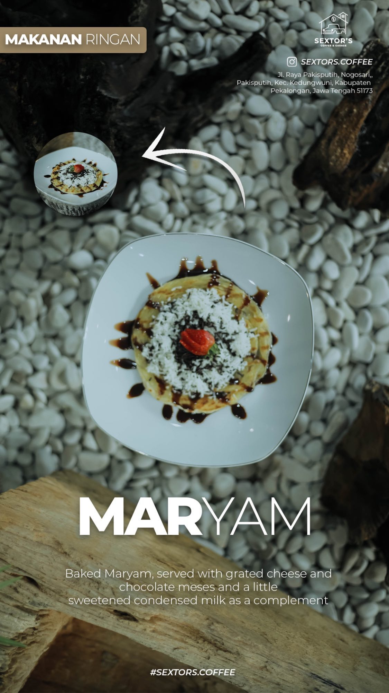
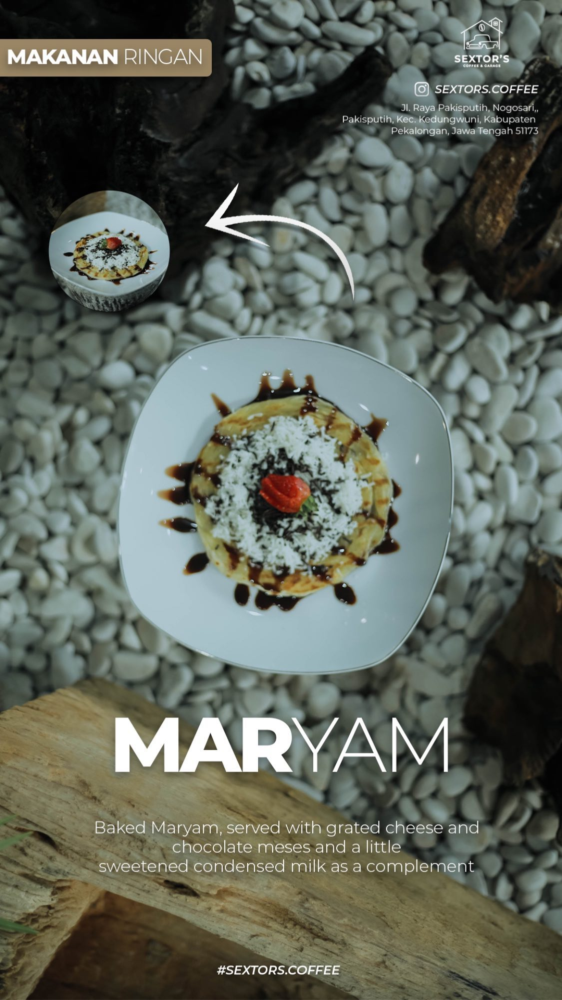

Nikmati Kopi dan Hidangan Lezat di Tempat Nyaman

Nikmati berbagai menu andalan kami.


Kami juga memiliki menu non-coffee untuk kamu yang ingin pilihan lain selain kopi dan untuk anak - anak.


Kami juga memiliki menu food dengan cita rasa lezat dan kekinian.
 

Berbagai macam makanan ringan siap menemani secangkir kopimu .
Sextors Caffe Pekalongan adalah tempat terbaik untuk menikmati kopi berkualitas dan makanan ringan khas kafe. Kami menawarkan suasana yang nyaman untuk bersantai, bekerja, atau berkumpul dengan teman.
Instagram: sextors.coffee
Alamat: Jl.Raya Pakisputih,Kedungwuni,Pekalongan 51173